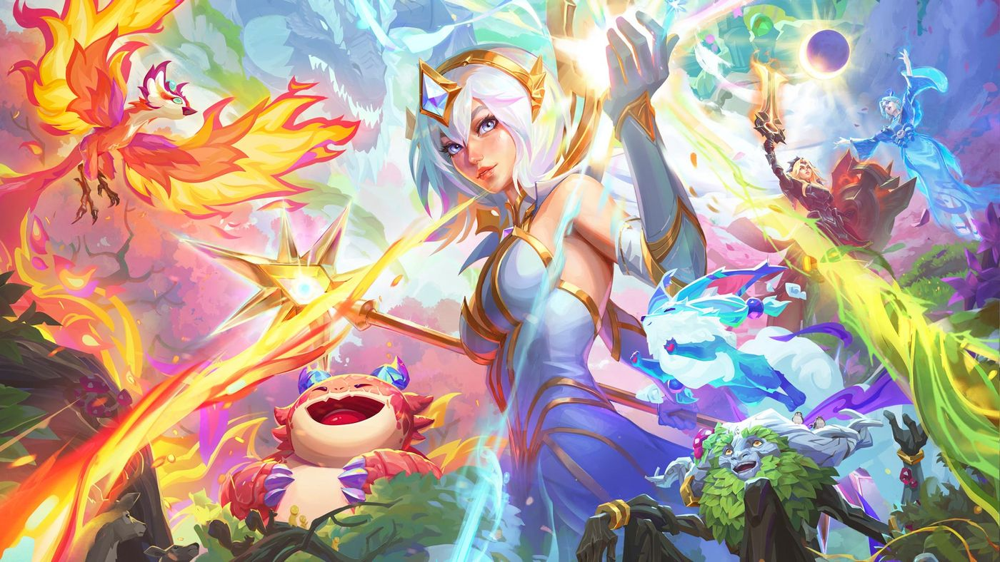

롤토체스 세트18 신비의숲 협곡야수·개화·날렵이 특성 활성화 단계 정리
롤토체스 세트18 신비의 숲, 특성표만 펼쳐놓고 뭐부터 봐야 하나 막막하셨던 분들 많으실 텐데요. 세트18은 8월 26일 18.1 패치로 정식 출시됐는데 특성 종류가 워낙 많다 보니, 하나씩 뜯어보지 않으면 감이 잘 안 오더라고요. 오늘은 그중에서도 협곡야수·개화·날렵이, 이렇게 세 특성이 몇 명을 모아야 켜지고 단계마다 뭘 주는지 정리해볼게요. 같은 신비의 숲 특성 중 나무정령·악의 여단·검은 가시·요정·지옥불·적응가는 지난번에 따로 정리해뒀으니 오늘은 다루지 않을게요.

신비의 숲 세트18 공식 키비주얼이에요.
이미지 출처: 라이엇 공식 '신비의 숲 개요' 페이지 · 네이버 본문엔 받아서 재업로드 권장
협곡야수·개화·날렵이, 활성화 단계부터 짚어볼게요
세 특성은 활성화에 필요한 인원수부터 확 다릅니다 — 협곡야수는 3·5·7·10, 개화는 3·5·7·9·11, 날렵이는 3·5·7로 나뉘어요.
| 특성 | 활성화 단계 | 대표 챔피언 |
|---|---|---|
| 협곡야수 | 3·5·7·10 | 어미 부리, 바위 게, 장로 드래곤 등 |
| 개화 | 3·5·7·9·11 | 카르마, 아리, 럭스 등 |
| 날렵이 | 3·5·7 | 티모, 트리스타나, 람머스 등 |
표만 보면 단순해 보이지만, 세 특성 다 켜지는 방식이 완전히 달라서 하나씩 뜯어봐야 감이 와요.
협곡야수는 몇 명부터 효과가 붙나요
협곡야수는 3명부터 우두머리 표식을 쓸 수 있고, 10명을 채우면 최대 팀 규모까지 늘어나는 특성이에요.
협곡야수(3·5·7·10)는 우두머리 표식이라는 보조 장치를 얼마나 잘 쓰느냐가 관건인 특성이에요. 3단계부터 협곡야수 챔피언 하나한테 표식을 씌워 고유 효과를 부여하는데요, 어미 부리한테 씌우면 공격할 때 적 방어력을 깎고 바위 게한테 씌우면 체력이 낮을 때 아군 전체를 회복시켜줘요. 5단계는 일정 전투 횟수마다 다음 상점이 협곡야수로 뒤덮이고, 7단계부터는 전투 시작 시·5초마다 협곡야수가 계속 성장해 능력치를 얻어요. 10단계까지 채우면 최대 팀 규모가 1명 늘어나는데, 이게 로스터 10종을 무조건 다 채워야만 나오는 조건은 아니에요. 로스터는 불타는 묘목·조약돌·어스름늑대·심술두꺼비·바위 게·어미 부리·돌거북·덩굴정령·파수꾼·장로 드래곤이고요, 5단계 유닛인 장로 드래곤은 2슬롯을 차지하는 대신 특성 보너스를 +2만큼 채워줘서, 장로 드래곤을 챙기면 나머지 로스터 중 한 마리를 덜 데려가도 카운트 10을 달성할 수 있어요. 장로 드래곤은 광역 기본공격에 전장 전체 기절, 지속 피해 스킬까지 갖춘 탱커형 전사고요.
표식을 어느 챔피언한테 씌우느냐로 조합 방향이 갈려요.
개화는 몇 명이면 수호령이 강해지나요
개화는 3단계부터 수호령이 업그레이드되고, 11단계까지 채우면 수호령 위력이 폭주하는 특성입니다.
개화(3·5·7·9·11)는 예전에 정리해둔 '수호령' 등장규칙이랑 맞물려 돌아가는 특성이에요. 개화 챔피언은 전투를 할수록 공격력·주문력·최대 체력을 얻고, 전투가 끝나면 그 보상으로 아군 수호령이 강화돼요. 3단계는 수호령 자체가 업그레이드되고, 5단계부터는 수호령이 매 상점마다 등장해요. 7단계는 수호령을 구매할 때마다 골드를 얻고, 9단계는 한 라운드에 수호령을 2마리까지 살 수 있고요, 11단계까지 채우면 수호령 위력이 아예 폭주하는 수준까지 올라간다고 해요. 수호령 강화에 가장 중점을 둔 주 특성이라 로스터도 카르마·요릭·유나라·마스터 이·아리·세트·애쉬·럭스까지 8종으로 넉넉해요.
수호령을 사면 개화 챔피언이 그만큼 강해져요.
날렵이는 몇 명부터 탈 것 효과가 붙나요
날렵이는 3명부터 기수가 체력과 공격 속도를 얻고, 7명까지 채우면 그 효과가 아군 날렵이 챔피언한테 퍼지는 특성이에요.
날렵이(3·5·7)는 요들(또는 람머스)이 '커다란 털뭉치 친구'라는 탈 것에 올라타는 컨셉이 재밌는 특성이에요. 3단계가 되면 그 탈 것에 탄 기수가 체력이랑 공격 속도를 얻고, 5단계부터는 추가 효과가 일정 비율로 아군한테 퍼져요. 7단계까지 채우면 그 비율이 더 올라가 아군 날렵이 챔피언들이 더 많은 효과를 받고, 날렵이 상징을 쓰면 다른 챔피언도 탈 것에 태울 수 있대요. 로스터는 코부코·베이가·티모·트리스타나·람머스·나르 6종인데, 티모는 스킬 '우리 안의 곰팡이'로 버섯을 채집해 상점 새로고침·전략가 체력·경험치를 챙기는 연계까지 있어 개인적으로 눈여겨보고 있어요.
| 날렵이 단계 | 효과 |
|---|---|
| 3단계 | 기수(요들/람머스)가 체력·공격 속도 획득 |
| 5단계 | 추가 효과가 일정 비율로 아군 적용 |
| 7단계 | 추가 효과 비율 상승 + 아군 날렵이 챔피언 적용 |
커다란 털뭉치 친구를 타고 필드를 달리는 모습이에요.
정식 출시 후에도 수치가 바뀔 수 있어요
위에 정리한 단계별 수치는 라이엇 공식 '신비의 숲 개요' 문서 기준이고, 문서 자체에 PBE 테스트 이후 밸런스가 조정될 수 있다고 명시돼 있어요.
그러니까 지금 정리한 활성화 단계랑 효과는 어디까지나 8월 26일 정식 출시 시점 공식 자료 기준이라는 점은 감안해두시는 게 좋아요. 라이엇도 문서에 적힌 수치가 전부 바뀔 수 있고, 특히 PBE 테스트 서버에 출시된 뒤 밸런스 조정을 위해 수치가 달라질 가능성이 높다고 직접 밝혀뒀거든요. 그래서 어느 특성이 제일 세다고 단정 짓기보다는 패치노트가 새로 뜰 때마다 다시 확인해보시는 걸 추천드려요.
개인적으로 드는 생각
개인적으로는 이 세 특성이 서로 성격이 완전히 달라서 재밌더라고요. 협곡야수는 10단계까지 가야 진가가 나오는 장기전형이고, 날렵이는 7단계면 이미 다 켜지는 초반 체감형이라 초반·후반 밸런스를 어떻게 섞느냐가 조합의 핵심일 것 같아요. 개화는 그 중간에서 수호령이라는 별도 자원을 계속 쌓아주는 역할이라, 세 특성을 한 조합에 다 넣기보다는 하나를 메인으로 잡고 나머지는 보조로 가져가는 편이 낫지 않을까 싶어요. 다음 판엔 협곡야수 10단계 한번 제대로 노려볼 생각이에요.
자주 묻는 질문
Q. 협곡야수 10단계까지 채우려면 로스터 몇 명이 다 필요한가요?
꼭 그렇진 않아요. 장로 드래곤이 2슬롯을 쓰는 대신 카운트를 +2만큼 채워주기 때문에, 장로 드래곤을 포함하면 로스터 9마리만으로도 카운트 10(최대 팀 규모 +1)을 달성할 수 있습니다.
| 협곡야수 단계 | 필요 인원 | 핵심 보상 |
|---|---|---|
| 3단계 | 3명 | 우두머리 표식 사용 가능 |
| 7단계 | 7명 | 전투 중 자동 성장(5초마다 능력치 획득) |
| 10단계 | 9명(장로 드래곤 포함) | 최대 팀 규모 +1 |
Q. 날렵이는 요들만 탈 것에 탈 수 있나요?
기본적으로는 요들(또는 람머스)이 커다란 털뭉치 친구에 탑승하는 구조인데요, 날렵이 상징을 쓰면 다른 챔피언도 탈 것에 태울 수 있다고 공식 문서에 나와 있어요.
협곡야수·개화·날렵이 정리
챙길 건 결국 이거예요 — 협곡야수(3·5·7·10)·개화(3·5·7·9·11)·날렵이(3·5·7), 세 특성 모두 몇 명이 필요한지도 커지는 방식도 완전히 달랐어요. 로스터도 서로 안 겹치니까 조합 짤 때 하나만 메인으로 정해도 충분할 것 같고요, 여러분도 8월 26일 열린 신비의 숲에서 이 세 특성부터 한번 굴려보시길 바라요.
✔ 신비의 숲 같이 보기 좋은 내용
(같은 세트18 시리즈로 먼저 정리해둔 '롤토체스 세트18 신비의숲 나무정령·악의 여단·검은 가시 특성 활성화 단계 6종 정리' 글도 같이 보면 좋아요 — 발행 시 링크 연결)